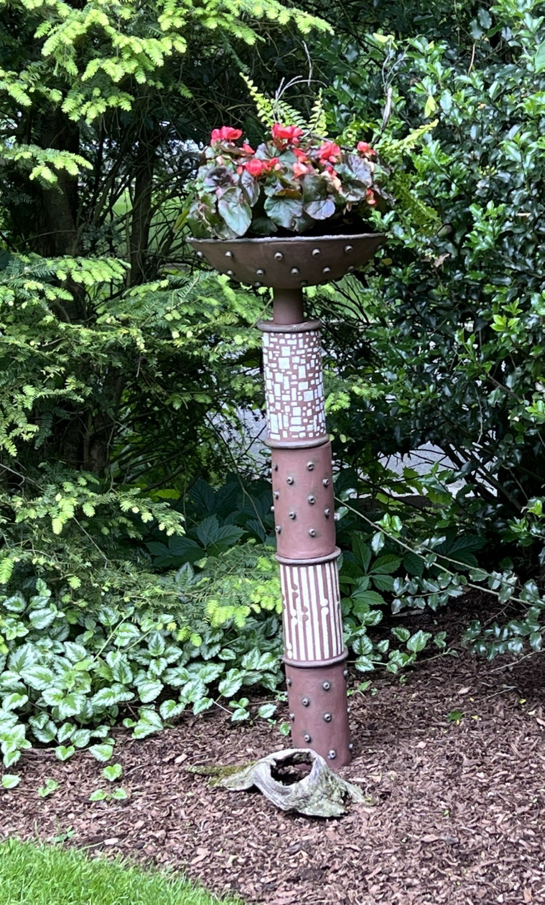
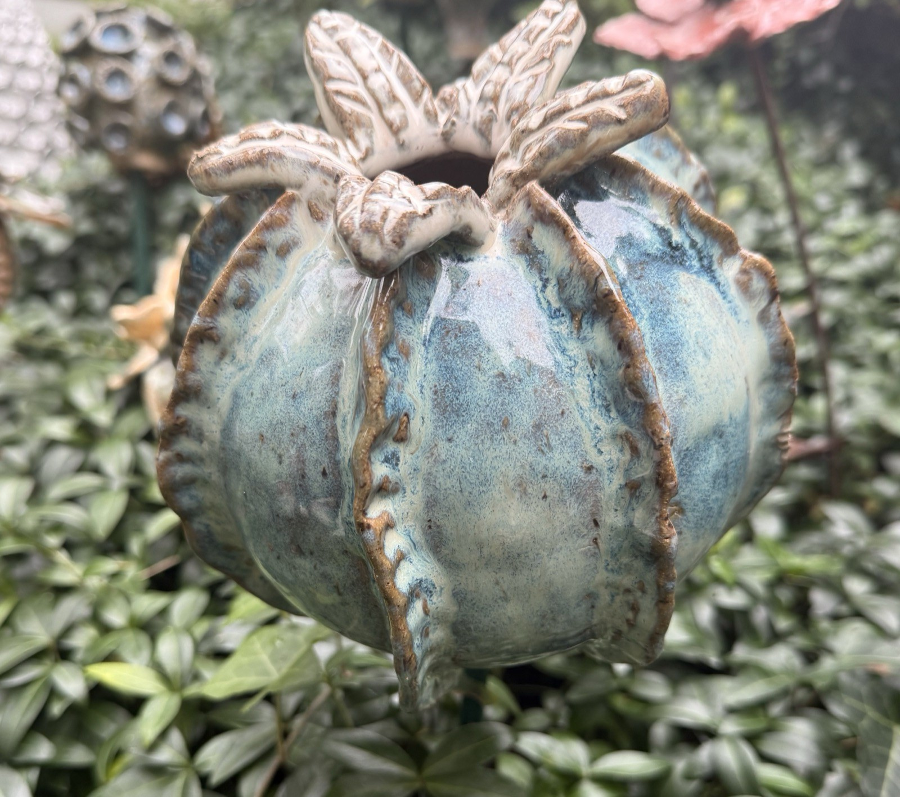

01 / 21
Category
Handmade ceramics born from vintage finds and garden landscapes.
Sharyn Kohen
Handmade ceramics born from vintage finds and garden landscapes.


Process
About
I’m a retired financial services consulting executive with a growing passion for ceramics. After years spent helping clients solve complex problems, I realized the part of consulting I loved most was the creative challenge of working through something new — often using familiar tools in unfamiliar ways.
My work draws inspiration from two long-standing passions: gardening, especially container gardening, and the thrill of finding vintage and industrial objects that carry texture, history, and character.
In the studio, every piece becomes its own small puzzle: how a form should settle, how a glaze will break or move, and how I can engineer my ideas so that they come to life in three dimensions. It’s the same mindset that fueled my consulting work, now expressed through clay, fire, and experimentation.
Pot Lady Studios is a place to share my work, my process, and the inspiration I find in the garden, in old objects, and in the joy of learning something new each day.
Commissions
Have something in mind? I take on a handful of custom pieces each season — planters for the garden, vessels for the home, or something we figure out together. Tell me a bit about what you’re after and I’ll be in touch.